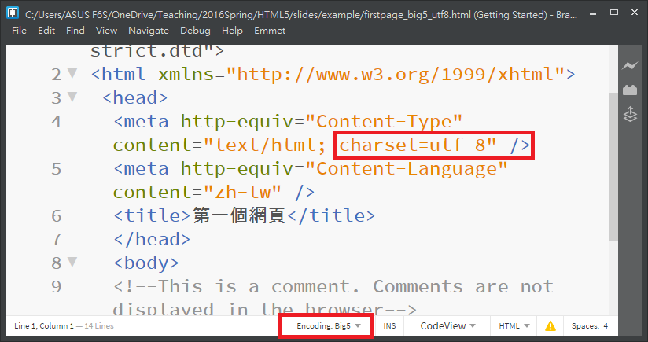

HTML 語法的宣告(1/2)
- 每一個 HTML 語言第一行的程式碼都應該要宣告使用哪一種語法標準解析這份 HTML 文件
- 宣告使用 HTML4 嚴謹的語法標準的寫法
<!DOCTYPE HTML PUBLIC
"-//W3C//DTD HTML 4.01//EN"
"http://www.w3.org/TR/html4/strict.dtd"><!DOCTYPE html PUBLIC
"-//W3C//DTD XHTML 1.0 Strict //EN"
"http://www.w3.org/TR/xhtml1/DTD/xhtml1-strict.dtd"><!DOCTYPE html>HTML 語法的宣告(2/2)
- 同學可能說，我的 HTML 程式碼第一行沒有宣告也可以正常看見網頁，Why?
- HTML5 標準並沒有規範「當撰寫不合規定的語法(well-formed markup)時，瀏覽器應該要如何處理？」
- 因為 Browser 必須解析 HTML3.2, HTML4, XHTML, HTML5 所有的語法，這一群很會寫 Browser 程式的 Programmer，已經把這些問題都給解決了，換句話說， Browser 可以僅解析語法中的樣貌，不理會 DOCTYPE 這個宣告
- 同學可以使用 W3C Validator 來檢查你所寫的 HTML 語法是否符合標準？這時候 DOCTYPE 這個宣告就有用處了
- WHATWG: HTML Living Standard
HTML5 的語法架構
<!DOCTYPE html>
<html lang="zh-Hant-TW">
<head>
</head>
<body>
</body>
</html>- Line 2, 14：所有的標籤都是必須在<html> 標籤的內部
- Line 6, 8：<head> 標籤內部宣告程式的編碼語言、外部的連結檔案等
- Line9, 13：<body> 標籤是網頁的主體，網頁內容的呈現都在這個標籤內部
HTML5 程式碼的範例
<!DOCTYPE html>
<html lang="zh-TW">
<head>
<meta charset="utf-8">
<title>這是標題</title>
<link href="styles.css" rel="stylesheet">
<script src="scripts.js"></script>
</head>
<body>
<p>這是段落的標籤</p>
</body>
</html>- HTML5 標籤的英文字母大寫、小寫沒有區別
- HTML5 的語法比 HTML4 簡單
- HTML5 語法比 XHTML5 更具有彈性
XHTML5 的語法架構
<!DOCTYPE html>
<html lang="zh-TW" xmlns="http://www.w3.org/1999/xhtml">
<head>
<meta charset="utf-8"/>
<title>這是標題</title>
<link href="styles.css" rel="stylesheet"/>
<script src="scripts.js"></script>
</head>
<body>
<p>這是段落的標籤</p>
</body>
</html>- 與 HTML5 差別在於增加了 xml name space： xmlns="http://www.w3.org/1999/xhtml"
- XHTML5 標籤都必須是小寫英文字母
- 每一個標籤都必須要有完整的結束標籤或結束的符號
zh-Hant-TW 與 zh-TW
- lang="zh-TW" 或 lang="zh-Hant-TW" 都可以，後者的設定是依照 Internet Engineering Task Force (IETF®)標準
- 在標準文件的 page 4 中有提到：
langtag = (language
["-" script]
["-" region]
*("-" variant)
*("-" extension)
["-" privateuse])Unicode 與 Big5 編碼(1/2)
Unicode 與 Big5 編碼(2/2)
- Unicode UTF-8 編碼分 with BOM(Byte Order Mark) 與 without BOM，但是根據 Unicode standard p.36, Use of a BOM is neither required nor recommended for UTF-8
- Brackets 是一個完整的 Unicode 編輯器，不支援 Big5 編碼，也建議同學使用完整的 Unicode 的編碼方式來撰寫 html 程式碼，不要再使用 Big5 編輯器來編輯程式碼
- 如果同學已經很清楚這些編碼的原理，就可以安裝 Shizimily Multi-Encoding 擴充套件，讓 Brackets 可以開啟你之前所編輯的 Big5 的檔案
title 與 link 標籤(1/2)
- title 標籤是瀏覽器上方頁籤的標題文字
title 與 link 標籤(2/2)
- link 標籤主要功能是連結外部的檔案，可以是網址、內部的檔案等
- 範例：
drill03_01.html 檔加入 link 標籤，連結到 drill03_01.css 檔
<!DOCTYPE html>
<html lang="zh-TW">
<head>
<meta charset="UTF-8">
<title>這是標題文字</title>
<link rel="stylesheet" href="drill03_01.css" />
</head><link rel="shortcut icon" type="image/x-icon"
href="https://addons.cdn.mozilla.net/static/img/favicon.ico">加入背景顏色
- 我們將背景顏色的設定值放在 drill03_01.css 檔案內, 就是底下 link 標籤這一行程式碼
<link rel="stylesheet" href="drill03_01.css" />標題文字 h1-h6(1/2)
這是 h1 的標題
，是最大的標題文字這是 h2 的標題文字
，是次大的標題文字這是 h6 的標題文字，是次大的標題文字
標題文字 h1-h6(2/2)
- 字體大小亦可以使用標籤元件的屬性 font-size 來設定字體的大小
- font-size 字體大小的屬性值有：xx-small, x-small, small, medium, large, x-large, xx-large
- 一般瀏覽器預設的字體 16 px 的字體，實際的字體大小還是要依照各種瀏覽器而定
- 1em = 12pt = 16px = 100%.
- em: 鉛字體的 M 字， pt 是 point 印表機的解析度， px 是 pixel 像素
練習：第一個網頁程式
- 請使用 Brackets 建立一個網頁，語言設為 zh-TW， 編碼： utf-8
- title 標籤文字自行設定
- 背景顏色使用 link 連結到外部的 .css 檔，檔名自己命名
- 背景顏色可以使用 http://www.colorzilla.com/gradient-editor來產生
- 練習 h1 - h6 標題文字標籤
W3C 目前標準制定的狀態
- HTML 語言的標準：
- 目前 HTML標準的狀態
- 目前 W3C 所公布的 HTML5 標準
- WHATWG: HTML Living Standard
- 階層式樣式表(Cascading Style Sheet, CSS) 的標準：
- 目前 CSS3 標準的狀態
- 目前 W3C 所公布的 CSS 標準
檢驗的工具
- W3C Validator 底下有一段話：
This validator checks the markup validity of Web documents in HTML, XHTML, SMIL, MathML, etc. - W3C 網站提供 CSS Validator 來檢查 CSS
- Can I Use 這個網站可以檢驗你使用的標籤或 CSS 的語法，支援被那些版本的瀏覽器所支援
- 請到 Can I use 網站輸入 header 或者 footer 看看會有何結果？
- 為你所使用的瀏覽器打分數？(支援 CSS3 標準的程度)
使用 Modernizr 來偵測
如何使用 Modernizr 函式庫
- Modernizr 提供「部分(Add your detects)」及「全部(Development build)」兩種方式來下載這個 Javascript Library
- 點選 Add your detects >> 選擇你想要偵測的 element >> 點選 BUILD
- 點選 Development build >> 點選 BUILD >> Build | Download
- 將下載的 .js 檔案加入到 <head> 標籤內部
- 在 html 檔案中撰寫 Javascript 語法來偵測
使用 Modernizr 的範例
<!DOCTYPE html>
<html lang="zh-TW">
<head>
<meta charset="utf-8">
<title>HTML5/CSS3 偵測</title>
<script src="./modernizr-latest.js"></script>
</head>
<body>
<p>這是使用 modernizr-latest.js Library 偵測 HTML5/CSS3 ... <br>
<span id="elvis" style="color:red"></span></p>
<script>
// 找這個網頁中命名為 elvis 的標籤元件來顯示其結果
var elvis = document.getElementById("elvis");
if (Modernizr.draganddrop) {
elvis.innerHTML = "恭喜！ 你的瀏覽器支援拖放(drag-and-drop)功能";
}
else {
elvis.innerHTML = "抱歉！你的瀏覽器不支援拖放(drag-and-drop)功能";
}
</script>
</body>
</html>使用 Polyfills 來修補
- Modernizr 僅能偵測並告知瀏覽者更換不同的瀏覽器來觀看網頁
- 問題是：有辦法讓舊的瀏覽器也支援新的 HTML/CSS3 的語法嗎？
- 答案是：有的，例如： html5shim.googlecode.com 的 html5shiv，可以讓 IE 部分支援 HTML5 的標籤
- 在 HTML5 Cross Browser Polyfills 可修補不同瀏覽器間所寫的 Javascript API 的應用
- HTML5 Please 可以找到相關的 Javascript Library 來修補 HTML5, CSS3, etc...
HTML5 新增的標籤元件(1/2)
| 類別 | 標籤元件 |
|---|---|
| 版面結構 | <article>,<aside>,<figcaption>, <figure>,<footer>,<header>, <nav>,<section>,<details>,<summary> |
| 文字 | <dfn>, <abbr>,<mark>,<time>,<wbr> |
| 輸入表單 | <input>(不是新增的元件，是新增功能),<datalist>,<keygen>,<meter>, <progress>,<command>,<menu>,<output> |
HTML5 新增的標籤元件(2/2)
| 類別 | 標籤元件 |
|---|---|
| 多媒體 | <audio>, <video>, <source>,<embed> |
| 畫布 | <canvas> |
| 非英文語系的支援 | <bdo>, <rp>, <rt>, <ruby> |
- 有些元件雖然是舊有的標籤元件，例如：input 標籤，HTML5 都賦予他們新的生命與意義
頁面標籤的結構

Source from: Searching in Google's Picture
頁面標籤的範例
<!DOCTYPE html>
<html lang="en">
<head>
<meta charset="utf-8">
<meta name="description" content="This is an HTML5 example">
<meta name="keywords" content="HTML5, CSS3, JavaScript">
<!-- Patch to make semantic elements work in IE8 and below. -->
<!--[if lt IE 9]>
<script src="http://html5shim.googlecode.com/svn/trunk/html5.js"></script>
<![endif]-->
<title>This text is the title of the document</title>
<link rel="stylesheet" href="mystyle.css">
</head>
<body>
<article>
<header>
<h1>How the World Could End</h1>
<p class="Teaser">Scenarios that spell the end of life as we know</p>
<p class="Byline">by Ray N. Carnation</p>
</header>
<div class="Content">
<p><span class="LeadIn">Right now</span>, you're probably feeling pretty good. After all, life in
the developed world is comfortable<span class="style1">—</span>probably more comfortable than it's
been for the average human being throughout all of recorded history.</p>
<figure class="FloatFigure">
<img src="human_skull.jpg" alt="Human skull">
<figcaption>Will you be the last person standing if one of these apocalyptic
scenarios plays out?</figcaption>
</figure>
<p>But don't get too smug. There's still plenty of horrific ways it
could all fall apart. In this article, you'll learn about a few of our
favorites.</p>
<h2>Mayan Doomsday</h2>
<p>Skeptics suggest that the Mayan calendar simply rolls to a new
5,126-year era after 2012, and doesn't actually predict a life-ending
apocalypse. But given that the long-dead Mayans were wrong about
virtually everything else, why should we trust them on this?
</p>
<h2>Robot Takeover</h2>
<p>Not quite as frightening as a Vampire Takeover or Living-Dead
Takeover, a robot rebellion is still a disquieting thought. We are
already outnumbered by our technological gadgets, and even Bill Gates
fears the day his Japanese robot slave turns him over by the ankles
and asks (in a suitably robotic voice) "Who's your daddy now?"
</p>
<aside class="PullQuote">
<img src="quotes_start.png" alt="Quote">
We don't know how the universe started, so we can't be sure it won't
just end, maybe today.
<img src="quotes_end.png" alt="End quote">
</aside>
<h2>Unexplained Singularity</h2>
<p>We don't know how the universe started, so we can't be sure it won't
just end, maybe today, and maybe with nothing more exciting than a
puff of anti-matter and a slight fizzing noise.</p>
<h2>Runaway Climate Change</h2>
<p>Dismissed by some, Al Gore's prophecy of doom may still come true. If
it does, we may have to contend with vicious storms, widespread food
shortages, and surly air conditioning repairmen.</p>
<h2>Global Epidemic</h2>
<p>Some time in the future, a lethal virus could strike. Predictions
differ about the source of the disease, but candidates include
monkeys in the African jungle, bioterrorists, birds and pigs with the
flu, warriors from the future, an alien race, hospitals that use too
many antibiotics, vampires, the CIA, and unwashed brussel sprouts.
Whatever the source, it's clearly bad news.
</p>
</div>
</article>
<footer>
<p class="Disclaimer">These apocalyptic predictions do not reflect the views of the
author.</p>
<p>
<a href="AboutUs.html">About Us</a>
<a href="Disclaimer.html">Disclaimer</a>
<a href="ContactUs.html">Contact Us</a>
</p>
<p>Copyright © 2014</p>
</footer>
</body>
</html>- 請看實際的例子
- 這是一本書提供的範例(來源：HTML5 The Missing Manual)
Unorder List 標籤
- 沒有編號的項目符號(Unorder List)
- This is List one
- This is List Two
- This is List one
- This is List Two
Order List 標籤
- 編號的項目符號(Order List)
- Unorder List
- This is List one
- This is List Two
- Unorder List
- This is List one
- This is List Two